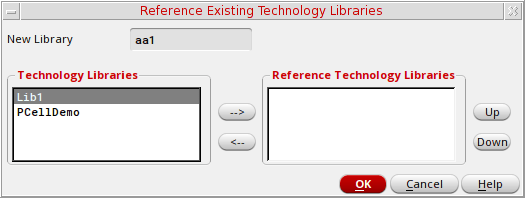

Referencing Existing Technology Libraries
To create a new technology file and reference it to an existing technology library, follow these steps:
- From the Technology File for New Library form, select Reference existing technology libraries.
-
Click OK.
The Reference Existing Technology Libraries form appears. -
Using the arrow buttons (-->, <--), or by double clicking, move the technology libraries that you want your new library to reference from the Technology Libraries section to the Reference Technology Libraries section.
Only libraries with a local technology library gets listed. If cdsDefTechLib exists, it gets removed as this library is used as the basic, default technology library. -
You can change the technology library reference priority by selecting a library in the Reference Technology Libraries section and choosing to the Up or Down buttons to change its priority position.
The library at the top of the list has the highest priority when applying rules and constraints to a design. -
Click OK.
Your new library gets created, referencing the selected technology libraries.
Related Topic
Attaching a New Library to an Existing Technology Library
Return to top